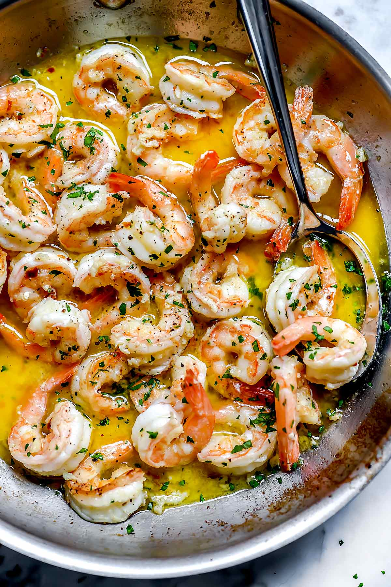

Shrimp Scampi

Description
A garlicky and zesty explosion of flavor. This simple to make dish is sure to impress. The acidity of the lemon complements the savory garlic.
Ingredients
- 1 lb shrimp, shelled and deveined
- shrimp shells
- 2 garlic cloves, sliced
- 1 lemon
- parsley, roughly chopped
- salt
- pepper
- butter
- olive oil
Steps
- Saute shrimp shells in olive oil
- Strain infused olive oil and reserve for later. Throw away shells
- Fry garlic in olive oil
- Throw in shrimp and cook until opaque 6-8 min
- Add back infused olive oil and parsley
- Serve and enjoy! :)